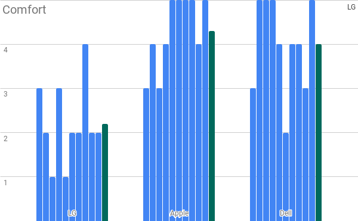

Results
The Green bar represents the average of all results.



Conclusion
This study shows that most performance scores were higher for the Dell Trackpad. Scores for the LG were noticeably lower compared to the other two. We didn't test to see whether scores were improved over time which could've affected the results of the test.
Although LG performed better, the test subjects preferred using the apple trackpad. This leads us to conclude that performance doesn't directly link to a user's preference over trackpads.
We noticed that people that said they are regular gamers performed better than those that arem't regular gamers. The gamers generally preferred Dell over Apple, while high performing non-gamers generally preferred Apple over Dell.
During the experiment, the test subjects were very vocal about their distaste for LG and their liking for Apple or Dell.
It is important to note that these trackpads do not directly corelate the quality of these brands trackpads, but rather the quality of these specific models. The models compared do not fit within the same budget range. The LG and Dell laptops are quite modern laptops with the MacBook Pro being almost 6 years older than both of them. These results can actually show that Apple has managed to successfully give what customers want with their trackpads for years, while other brands are still trying to catch up.